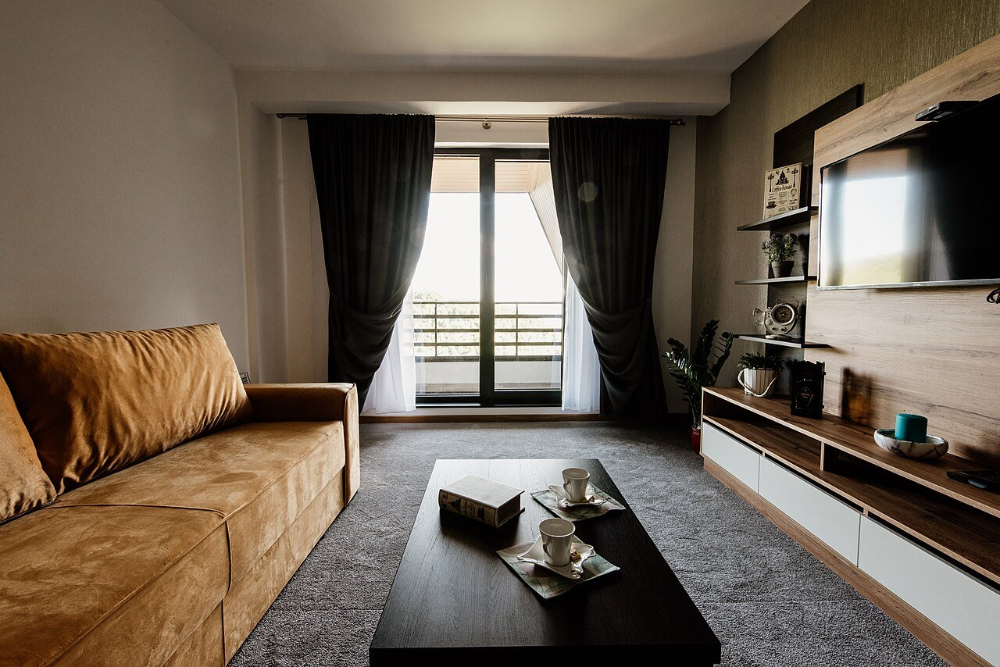
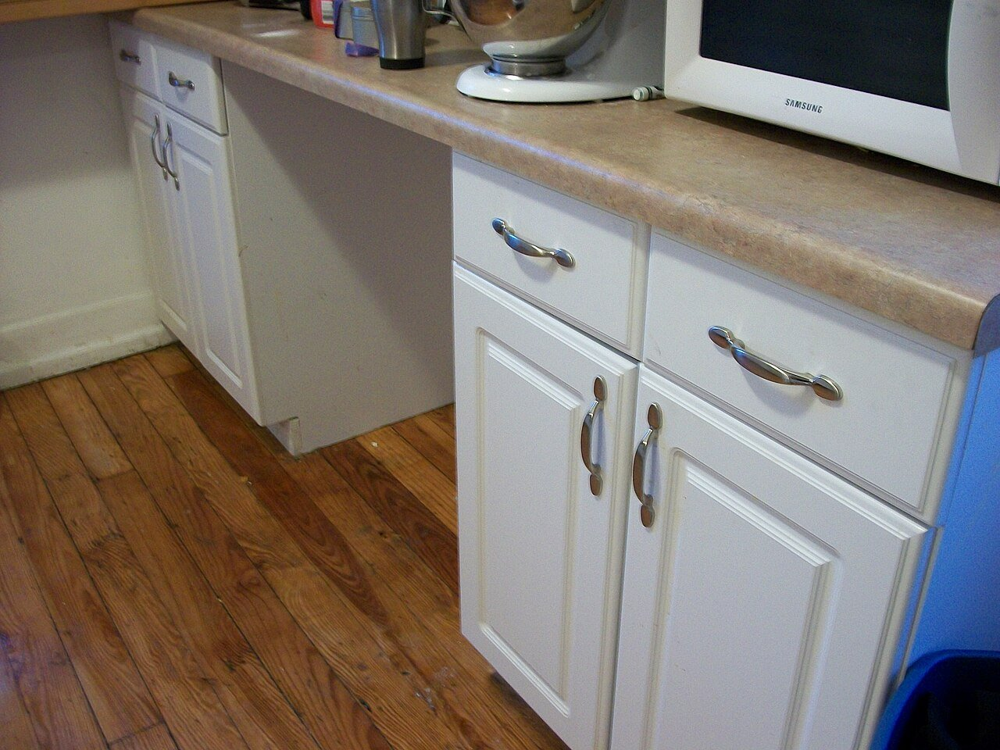
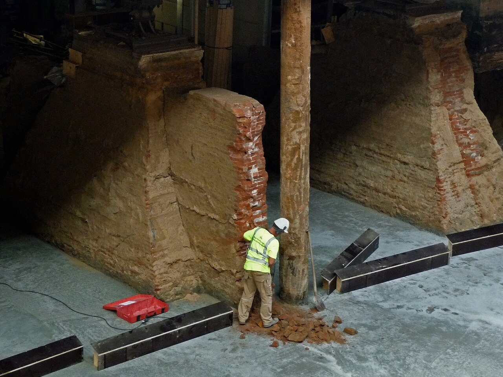

首頁 ／ 居家裝修
🏠 居家裝修
裝修是大多數人一生花費前幾名的大事，偏偏資訊最不透明。我們只做一件事：把報價、流程、材料、合約這些「行內常識」寫成白話文，讓你做決定之前心裡有底。本站只提供知識整理，不評論、不推薦任何店家。

裝修前必讀

裝修報價單怎麼看？先搞懂這 5 件事
報價單不是比總價就好：項目拆分、單位、品牌型號、付款比例、追加工程，每一項都藏著日後爭議的種子。

設計師怎麼挑？從丈量到簽約的檢查清單
設計費怎麼算、圖面要交付哪些、監工費是什麼——挑設計師之前先把遊戲規則弄清楚。

系統櫃怎麼計價？一尺多少錢才合理
系統櫃用「尺」計價，板材、五金、抽屜都分開算。先看懂計價方式，才不會丈量完才發現預算爆掉。

裝修施工流程順序：為什麼不能跳著做
拆除、水電、泥作、木作、油漆、系統櫃——順序錯了，輕則重工，重則漏水。本篇把完整流程與各階段檢查點整理給你。
裝修合約注意事項：簽下去之前逐條檢查
分階段付款、追加減帳簽認、保固條款、驗收方式——合約是裝修過程中最重要的保險，簽約前花十分鐘看完這篇。
延伸：租屋看房
還沒買房、先租屋？看房時該檢查的壁癌、水壓、手機訊號、隔音與合約陷阱，我們整理在之後的「租屋看房防雷」專題中（籌備中）。